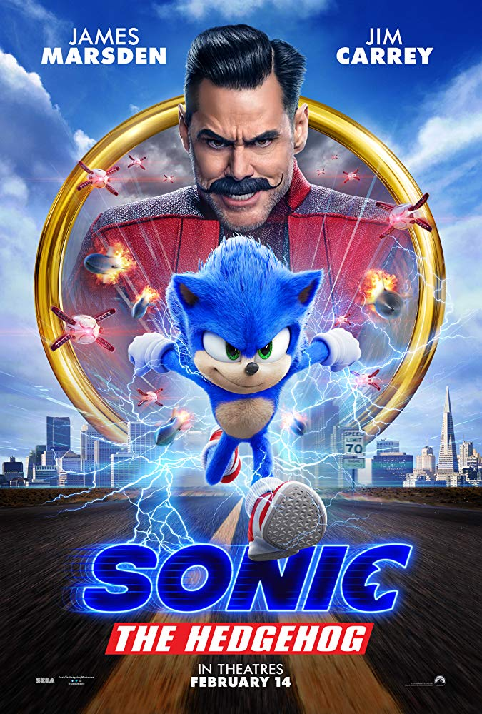

Video Games

Sonic the Hedgehog is to video game company, Sega, what the Mario Brothers are to Nintendo. Sonic the Hedgehog debuted with the Sega Genesis game of the same name in 1991. For a full list of all games released under the Sonic franchise, please see: https://en.wikipedia.org/wiki/List_of_Sonic_the_Hedgehog_video_games. And just for reference, the fast food restaurant was not named after the hedgehog (or vice verse)!
Comic Books

On November 22, 1992, Archie Comics published a Sonic the Hedgehog comic book series. The monthly comic ran for 290 issues, ending on December 28, 2016. In 2013, writer, Ken Penders, sued the comic, leading to the removal of all characters written by him and many other writers. There is a current comic book series written by Ian Flynn and published by IDW Publishing, which aligns more closely with the world established in the video games. This series began on July 21, 2017. (Sources: https://en.wikipedia.org/wiki/Sonic_the_Hedgehog_(Archie_Comics), https://en.wikipedia.org/wiki/Sonic_the_Hedgehog_(IDW_Publishing))
TV Shows
Adventures of Sonic the Hedgehog is an animated TV series that came out in 1993, and ran for 65 episodes. American-Italian animated series, Sonic the Hedgehog, came out in fall of the same year. In contrast with the bright, loud, comedic Adventures of Sonic the Hedgehog, the American-Italian show featured a dark and gritty storyline and ran for 26 episodes. This show and the Archie comic book featured the same characters and similarly serious storylines.
Another popular Sonic TV show is the Japanese anime, Sonic X, which began in 2003 and ran for 78 episodes. Some of these episodes are available for free on YouTube. (Sources: https://en.wikipedia.org/wiki/Sonic_the_Hedgehog_(TV_series), https://en.wikipedia.org/wiki/Adventures_of_Sonic_the_Hedgehog, https://en.wikipedia.org/wiki/Sonic_X)
Movie
Sonic the Hedgehog is a live-action movie that underwent such tremendous controversy due to its design of its titular character that its release date was pushed back several months from its original release date November 8, 2019 to February 14, 2020. People were particularly horrified by Sonic's human teeth and legs. Here is a comparison of the two designs in the two trailers that were released:
It opened well at the box office, setting the record for the biggest opening weekend for a video game-based film in the U.S. and Canada. Jim Carrey's performance as villain, Dr. Robotnik, also received praise from critics. (https://en.wikipedia.org/wiki/Sonic_the_Hedgehog_(film)). YouTubers on "Sibling Rivalry" by the Nostalgia Critic describe the reviews as mostly saying that this was a family film kids would love.